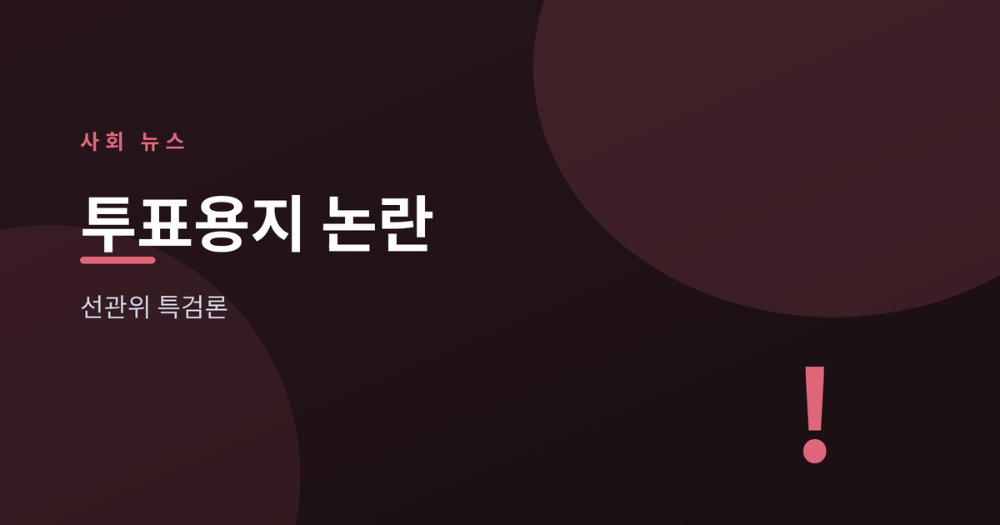
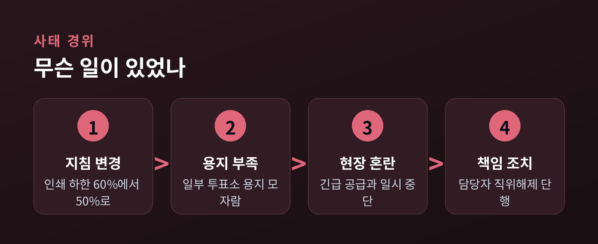
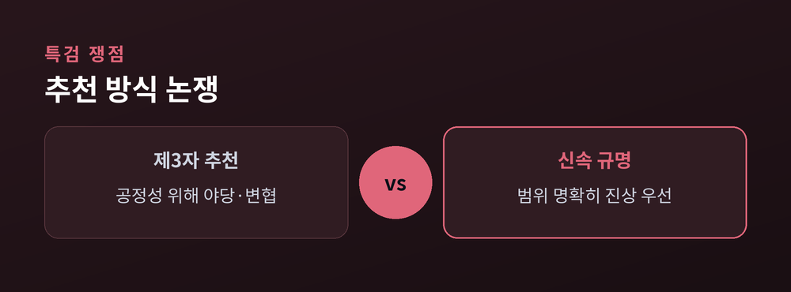
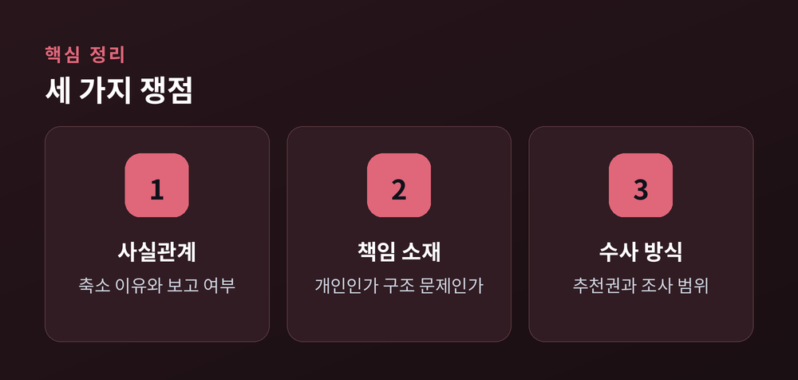
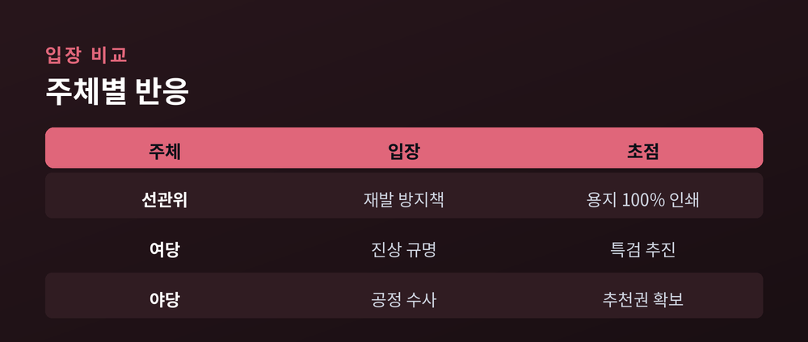

선관위 특검론, 무엇이 쟁점인가

이번 글에서는 6·3 지방선거에서 불거진 투표용지 부족 사태를 정리해 보겠습니다.
제9회 전국동시지방선거 당일, 일부 투표소에서 용지가 모자라 투표가 잠시 멈추는 일이 벌어졌습니다. 이후 정치권에서는 중앙선거관리위원회를 겨냥한 특별검사, 이른바 특검 도입론이 이어지고 있습니다.
민감한 사안인 만큼, 어느 한쪽 편을 들기보다 사실관계와 양측의 주장을 함께 짚어 보겠습니다.
사태의 발단은 투표용지 인쇄 물량이었습니다.
중앙선관위는 본투표일 용지를 전체 선거인 수의 하한선까지 줄여 인쇄할 수 있도록 내부 지침을 바꿨다고 알려졌습니다. 보도에 따르면 그 하한선은 종전 60%에서 50%로 낮아졌습니다.
선관위는 그 배경으로 높아지는 사전투표율과, 투표가 끝난 뒤 남는 용지를 둘러싼 부정선거 의혹을 들었다고 설명한 것으로 전해집니다. 남는 용지를 줄이려던 조치가 오히려 부족으로 이어진 셈입니다.
현장 혼선은 여러 지역에서 나타났습니다. 언론 보도를 종합하면 전국 140개가량의 투표소에 용지가 긴급 공급됐고, 그중 일부에서는 투표가 일시 중단됐습니다.

투표는 유권자의 기본권과 맞닿아 있습니다.
용지가 없어 투표가 멈췄다면, 그 시간에 발걸음을 돌린 유권자가 있었을 가능성을 배제하기 어렵습니다. 참정권이 실제로 제약됐는지가 우선 쟁점입니다.
선거 신뢰의 문제이기도 합니다. 선거를 관리하는 기관이 스스로 혼란의 원인을 제공했다는 지적이 나옵니다.
국정조사 과정에서는 사태를 예견한 매뉴얼이 없었고 보고 체계가 제대로 작동하지 않았다는 비판이 여야 모두에서 제기됐습니다. 선관위는 6월 초 관련 책임자 일부를 직위해제하며 자체 대응에 나섰습니다.
다만 인쇄 물량 축소가 고의였는지, 관리 부실에 따른 결과였는지는 아직 규명 대상으로 남아 있습니다. 이 지점에서 특검론이 등장했습니다.
특검 필요성 자체에는 여야가 대체로 공감대를 이뤘다고 전해집니다. 한 여론조사에서는 응답자의 상당수가 특검이 필요하다고 답했다는 결과도 나왔습니다.
쟁점은 방식입니다. 특히 특검을 누가 추천하느냐를 두고 입장이 갈립니다.
한쪽에서는 수사의 공정성을 위해 야당이나 대한변호사협회 같은 제3자가 특검을 추천해야 한다고 주장합니다. 여당이 추천한 특검이라면 결과에 대한 신뢰가 떨어질 수 있다는 논리입니다.
다른 한쪽에서는 신속하고 책임 있는 진상 규명을 강조하며, 수사 대상과 범위를 명확히 하는 데 무게를 둡니다. 인쇄 축소 결정 과정과 보고 누락 여부 등을 폭넓게 들여다봐야 한다는 것입니다.
방향에는 공감하되 절차를 두고 신경전이 이어지는 모습입니다.

논의가 복잡해 보이지만, 축을 나눠 보면 정리가 됩니다.
첫째, 사실관계입니다. 왜 인쇄량을 줄였고, 당일 보고는 제대로 이뤄졌는지가 핵심입니다.
둘째, 책임 소재입니다. 개인의 판단 착오인지, 조직 차원의 구조적 문제인지를 가려야 합니다.
셋째, 수사 방식입니다. 특검의 추천권과 조사 범위를 어떻게 정할지가 남은 과제입니다.

각 주체의 입장은 조금씩 결이 다릅니다.
선관위는 재발 방지책을 내놨습니다. 사전투표 제도를 손보고, 앞으로는 선거인 수의 100%까지 용지를 인쇄하겠다는 방침을 밝혔습니다.
여야는 국정조사에서 한목소리로 선관위를 질타했습니다. 다만 특검 추천권과 위원 구성 방식을 두고는 견해가 엇갈립니다.
이처럼 진상 규명이라는 목표에는 이견이 크지 않지만, 방법론에서 입장 차가 드러나고 있습니다.

당분간은 특검 추천권을 둘러싼 협상이 이어질 것으로 보입니다.
수사 범위와 추천 주체가 정리돼야 실제 조사가 시작될 수 있습니다. 국정조사 결과와 특검 논의가 맞물리며 선관위 개혁 논의로 번질 가능성도 있습니다.
무엇보다 이번 사안은 특정 진영의 유불리를 넘어, 선거 관리의 기본을 다시 묻는 계기라는 평가가 나옵니다.
정리하면 이렇습니다. 이번 논란의 핵심은 승패가 아니라 신뢰입니다.
"누가 이기느냐가 아니라, 유권자가 다시 믿을 수 있느냐." 결국 남는 질문은 이 하나일지도 모릅니다.
참고: 파이낸셜뉴스, 한국일보, 헤럴드경제, 문화일보, YTN